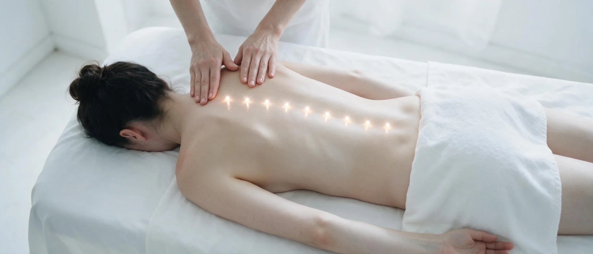

Body massage · Prague 4
Back and Neck Massage in Prague
Targeted deep massage exactly where it hurts most — between the shoulder blades, in the shoulders and along the cervical spine. The fastest relief from a day spent at a computer.
What back and neck massage is
Back and neck massage is a targeted deep massage focused on the upper back, shoulders and cervical spine. This is exactly where the tension of desk work settles: head pushed forward towards the monitor, shoulders raised by stress, shoulder blades that never move. A muscle held that way loses its circulation and starts to hurt.
During the massage I work the trapezius, the area between the shoulder blades and the attachments along the cervical spine. The pressure is deeper than in a relaxation massage — the aim is not to send you to sleep but to genuinely dissolve the hardened spots. It is not gentle stroking, but the relief is usually immediate.
How the massage works
- A short consultation You tell me where it hurts most and whether the pain shoots into your head or arms.
- Warming the tissue First I warm the whole back, so the muscle is not caught unprepared by deep pressure.
- The deep work Targeted pressure on hardened spots and trigger points. This is what decides the result.
- Stretching and settling A closing stretch of the neck and calming strokes along the spine.
What back and neck massage does
- relieves pain between the shoulder blades and in the shoulders
- frees a stiff neck and improves head rotation
- eases headaches originating in the neck
- restores circulation to overloaded muscles
- releases tension accumulated through stress
- immediate relief after a single massage
Who it suits
Back and neck massage is ideal if you sit at a computer all day, wake with a stiff neck, feel burning between the shoulder blades, or get headaches coming from the neck. It is also sought out by drivers, hairdressers and anyone who works long hours in one position.
When we do not massage
- acute disc herniation or pain shooting into a limb
- acute inflammation, fever or infectious illness
- fresh injury, open wounds or bruising in the area
- thrombosis and vein inflammation
- cancer under active treatment
Not sure? Call me before booking on +420 721 761 411 and we will talk it through.
Price of back and neck massage
Frequently asked questions
How much does a back massage cost?
Back and neck massage is 700 CZK for 30 minutes. If you also want the lower back worked, I recommend the full-body massage at 1 300 CZK instead.
How often should I have a back massage?
With desk work and constant tension, once every two to three weeks is ideal. If your back hurts acutely, start with a weekly course for a month.
Does deep back massage hurt?
Pressure on hardened spots can be uncomfortable, but it must never be sharp or take your breath away. We tune the intensity as we go — just say the word.
Can I be sore afterwards?
Yes, the day after a deep massage the muscles can feel tender, much like after exercise. It passes within two days. Warmth and plenty of water help.
Will it help my headaches?
If the pain comes from tension in the neck and trapezius, very often yes. For migraines or other causes a massage will not help — consult your doctor.
Book your back massage
The studio is in Prague 4 — Nusle, a short walk from Pankrác and Vyšehrad. Booking online takes a minute.